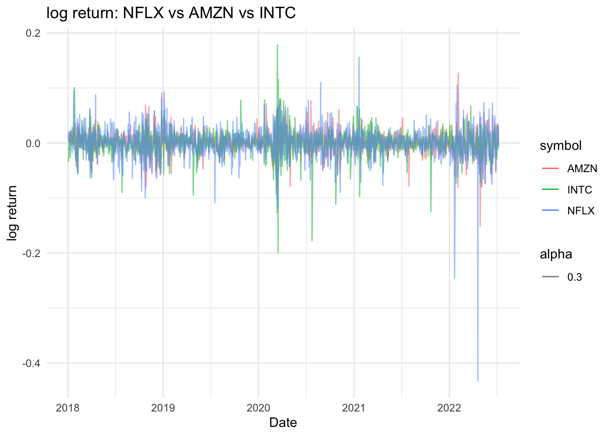
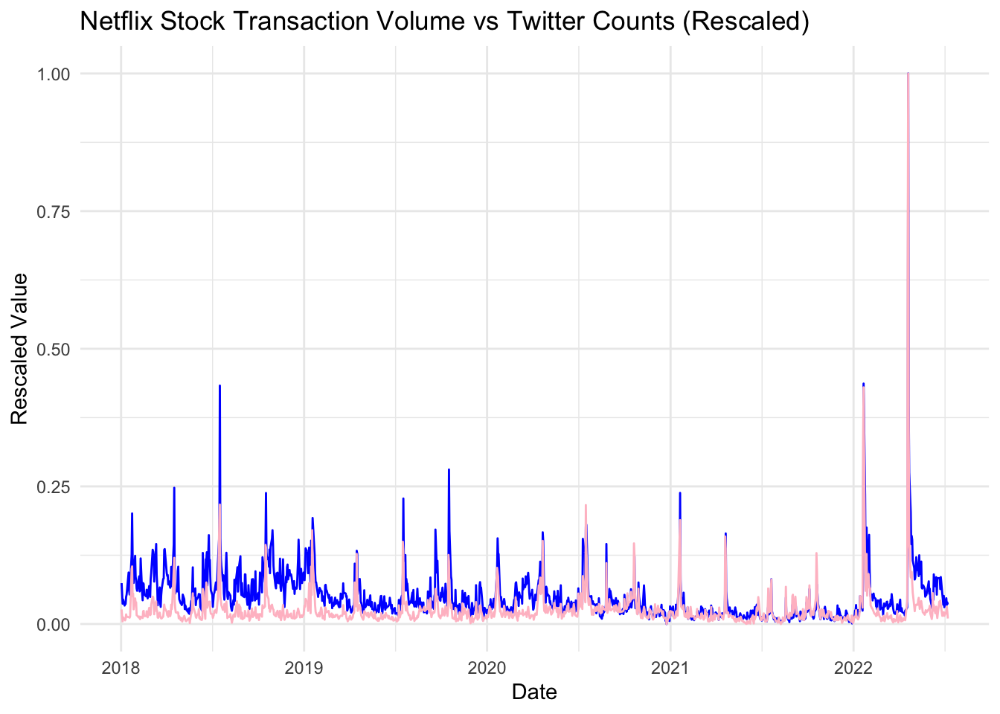
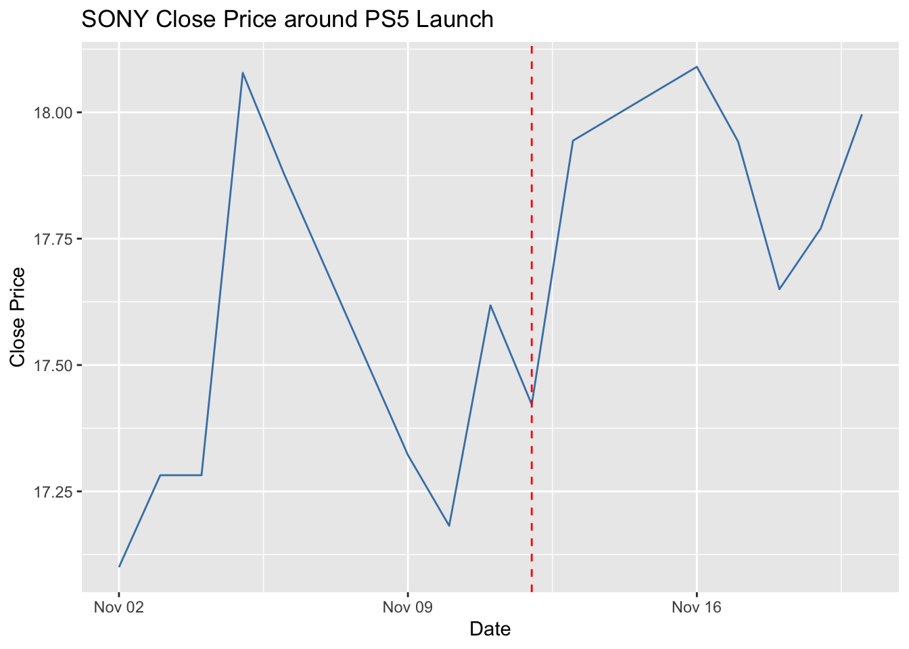
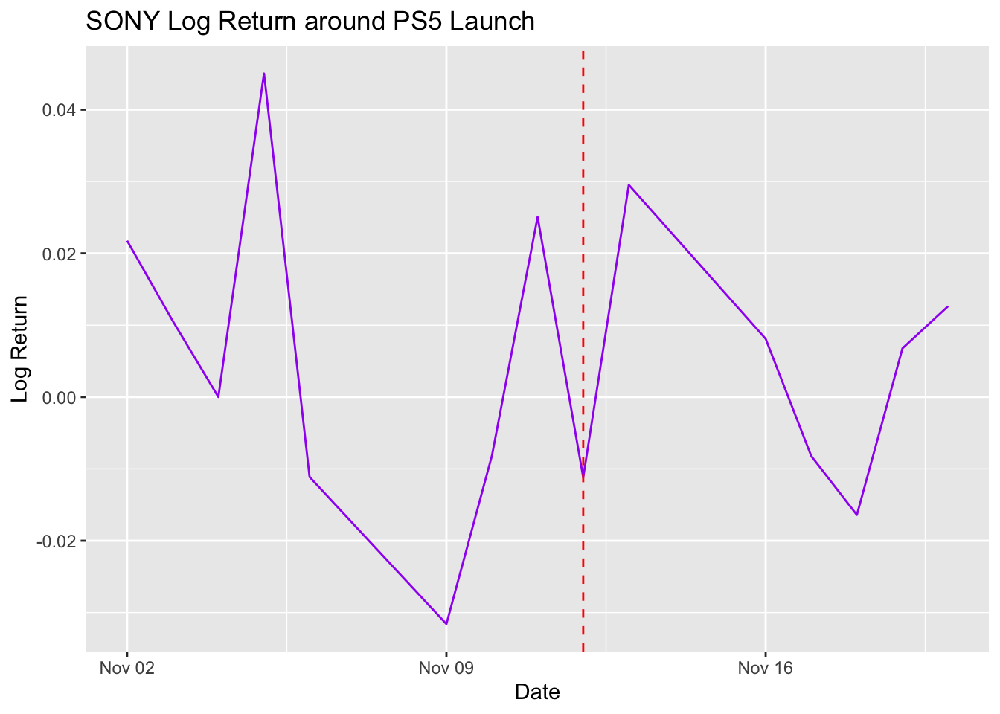
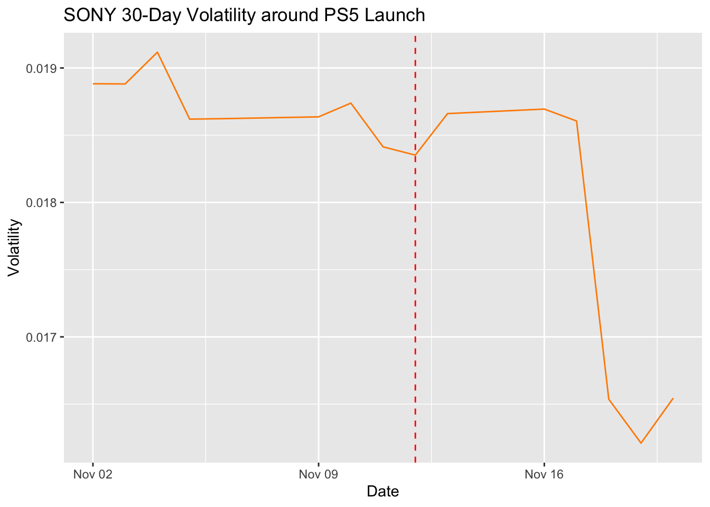
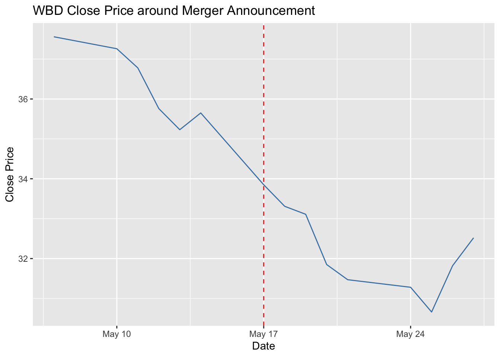
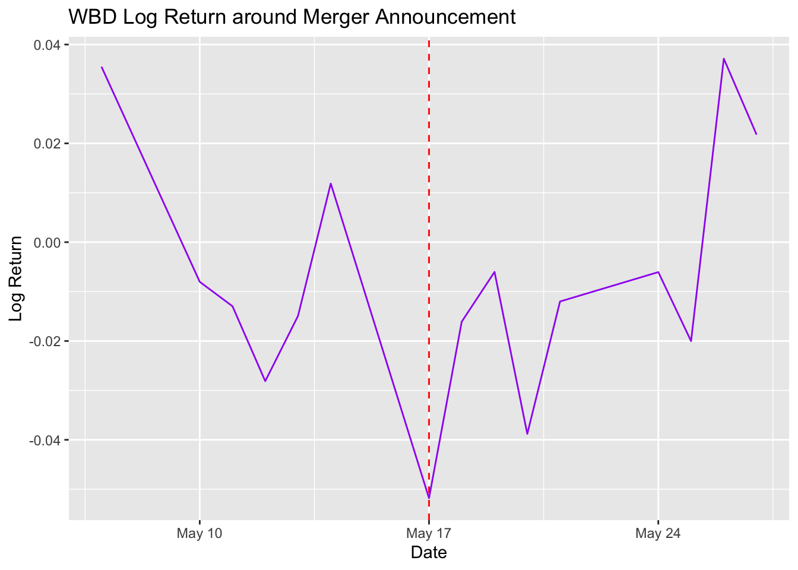
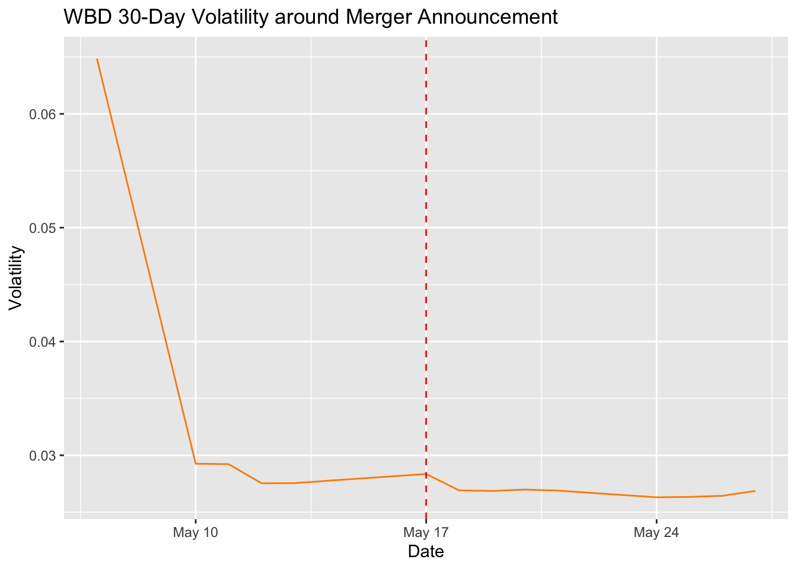

9 Extra Work: Stock Market Fluctuation
description: This section contains some extra work Phoebe did for fun. source: https://www.kaggle.com/datasets/zongaobian/netflix-stock-data-and-key-affiliated-companies?resource=download https://www.kaggle.com/datasets/kirolosatef/netflex-stock-dataset-with-twitter-sentiment?select=Ntweets.xlsx
Code
Rows: 4883 Columns: 7
── Column specification ────────────────────────────────────────────────────────
Delimiter: ","
dbl (6): Open, High, Low, Close, Adj Close, Volume
date (1): Date
ℹ Use `spec()` to retrieve the full column specification for this data.
ℹ Specify the column types or set `show_col_types = FALSE` to quiet this message.Code
Rows: 4205 Columns: 7
── Column specification ────────────────────────────────────────────────────────
Delimiter: ","
dbl (6): Open, High, Low, Close, Adj Close, Volume
date (1): Date
ℹ Use `spec()` to retrieve the full column specification for this data.
ℹ Specify the column types or set `show_col_types = FALSE` to quiet this message.Code
Rows: 6304 Columns: 7
── Column specification ────────────────────────────────────────────────────────
Delimiter: ","
dbl (6): Open, High, Low, Close, Adj Close, Volume
date (1): Date
ℹ Use `spec()` to retrieve the full column specification for this data.
ℹ Specify the column types or set `show_col_types = FALSE` to quiet this message.Code
Rows: 11085 Columns: 7
── Column specification ────────────────────────────────────────────────────────
Delimiter: ","
dbl (6): Open, High, Low, Close, Adj Close, Volume
date (1): Date
ℹ Use `spec()` to retrieve the full column specification for this data.
ℹ Specify the column types or set `show_col_types = FALSE` to quiet this message.Code
Rows: 4779 Columns: 7
── Column specification ────────────────────────────────────────────────────────
Delimiter: ","
dbl (6): Open, High, Low, Close, Adj Close, Volume
date (1): Date
ℹ Use `spec()` to retrieve the full column specification for this data.
ℹ Specify the column types or set `show_col_types = FALSE` to quiet this message.Code
Rows: 6507 Columns: 7
── Column specification ────────────────────────────────────────────────────────
Delimiter: ","
dbl (6): Open, High, Low, Close, Adj Close, Volume
date (1): Date
ℹ Use `spec()` to retrieve the full column specification for this data.
ℹ Specify the column types or set `show_col_types = FALSE` to quiet this message.Code
Rows: 5670 Columns: 7
── Column specification ────────────────────────────────────────────────────────
Delimiter: ","
dbl (6): Open, High, Low, Close, Adj Close, Volume
date (1): Date
ℹ Use `spec()` to retrieve the full column specification for this data.
ℹ Specify the column types or set `show_col_types = FALSE` to quiet this message.Code
Rows: 4661 Columns: 7
── Column specification ────────────────────────────────────────────────────────
Delimiter: ","
dbl (6): Open, High, Low, Close, Adj Close, Volume
date (1): Date
ℹ Use `spec()` to retrieve the full column specification for this data.
ℹ Specify the column types or set `show_col_types = FALSE` to quiet this message.Code
Rows: 11085 Columns: 7
── Column specification ────────────────────────────────────────────────────────
Delimiter: ","
dbl (6): Open, High, Low, Close, Adj Close, Volume
date (1): Date
ℹ Use `spec()` to retrieve the full column specification for this data.
ℹ Specify the column types or set `show_col_types = FALSE` to quiet this message.Code
Rows: 11085 Columns: 7
── Column specification ────────────────────────────────────────────────────────
Delimiter: ","
dbl (6): Open, High, Low, Close, Adj Close, Volume
date (1): Date
ℹ Use `spec()` to retrieve the full column specification for this data.
ℹ Specify the column types or set `show_col_types = FALSE` to quiet this message.Code
Rows: 11085 Columns: 7
── Column specification ────────────────────────────────────────────────────────
Delimiter: ","
dbl (6): Open, High, Low, Close, Adj Close, Volume
date (1): Date
ℹ Use `spec()` to retrieve the full column specification for this data.
ℹ Specify the column types or set `show_col_types = FALSE` to quiet this message.Code
Rows: 5146 Columns: 7
── Column specification ────────────────────────────────────────────────────────
Delimiter: ","
dbl (6): Open, High, Low, Close, Adj Close, Volume
date (1): Date
ℹ Use `spec()` to retrieve the full column specification for this data.
ℹ Specify the column types or set `show_col_types = FALSE` to quiet this message.Code
Rows: 6932 Columns: 7
── Column specification ────────────────────────────────────────────────────────
Delimiter: ","
dbl (6): Open, High, Low, Close, Adj Close, Volume
date (1): Date
ℹ Use `spec()` to retrieve the full column specification for this data.
ℹ Specify the column types or set `show_col_types = FALSE` to quiet this message.Code
Rows: 6312 Columns: 7
── Column specification ────────────────────────────────────────────────────────
Delimiter: ","
dbl (6): Open, High, Low, Close, Adj Close, Volume
date (1): Date
ℹ Use `spec()` to retrieve the full column specification for this data.
ℹ Specify the column types or set `show_col_types = FALSE` to quiet this message.Code
Rows: 1137 Columns: 10
── Column specification ────────────────────────────────────────────────────────
Delimiter: ","
dbl (9): Open, High, Low, Close, Adj Close, Volume, P_mean, P_sum, twt_count
date (1): date
ℹ Use `spec()` to retrieve the full column specification for this data.
ℹ Specify the column types or set `show_col_types = FALSE` to quiet this message.Code
event_df <- tibble::tibble(
date = as.Date(c(
"2020-11-12", # Sony PS5 launch
"2021-05-17" # WarnerMedia–Discovery merger news
)),
event = c(
"Sony PS5 global launch (gaming boom)",
"WarnerMedia–Discovery merger announced"
),
affected_companies = c(
"SONY", # New Gaming Station launch
"WBD" # Corporate structure change
)
)Code
# A tibble: 1 × 2
min_date max_date
<date> <date>
1 2018-01-02 2022-07-08Code
# data cleaning: adjust time span
filter_stock_data <- function(data) {
data %>%
mutate(Date = as.Date(Date)) %>%
filter(Date >= as.Date("2018-01-02") & Date <= as.Date("2022-07-08"))
}
WBD_stock <- filter_stock_data(WBD_stock)
V_stock <- filter_stock_data(V_stock)
UPS_stock <- filter_stock_data(UPS_stock)
SONY_stock <- filter_stock_data(SONY_stock)
PARA_stock <- filter_stock_data(PARA_stock)
NVDA_stock <- filter_stock_data(NVDA_stock)
NFLX_stock <- filter_stock_data(NFLX_stock)
MA_stock <- filter_stock_data(MA_stock)
LUMN_stock <- filter_stock_data(LUMN_stock)
INTC_stock <- filter_stock_data(INTC_stock)
FDX_stock <- filter_stock_data(FDX_stock)
CRM_stock <- filter_stock_data(CRM_stock)
AMZN_stock <- filter_stock_data(AMZN_stock)
AKAM_stock <- filter_stock_data(AKAM_stock)Code
# data cleaning: combine the stock data
normalize_and_label <- function(df, ticker) {
df %>%
mutate(
Date = as.Date(Date),
normalized = `Adj Close` / first(`Adj Close`),
symbol = ticker
)
}
all_stocks <- bind_rows(
normalize_and_label(WBD_stock, "WBD"),
normalize_and_label(V_stock, "V"),
normalize_and_label(UPS_stock, "UPS"),
normalize_and_label(SONY_stock, "SONY"),
normalize_and_label(PARA_stock, "PARA"),
normalize_and_label(NVDA_stock, "NVDA"),
normalize_and_label(NFLX_stock, "NFLX"),
normalize_and_label(MA_stock, "MA"),
normalize_and_label(LUMN_stock, "LUMN"),
normalize_and_label(INTC_stock, "INTC"),
normalize_and_label(FDX_stock, "FDX"),
normalize_and_label(CRM_stock, "CRM"),
normalize_and_label(AMZN_stock, "AMZN"),
normalize_and_label(AKAM_stock, "AKAM")
)Code
# data description
company_info <- tribble(
~Company_Name, ~Ticker, ~Sector,
"Warner Bros. Discovery", "WBD", "Media & Entertainment",
"Visa Inc.", "V", "Financial Services",
"United Parcel Service", "UPS", "Logistics",
"Sony Group Corporation", "SONY", "Consumer Electronics & Entertainment",
"Paramount Global", "PARA", "Media & Entertainment",
"NVIDIA Corporation", "NVDA", "Semiconductors",
"Netflix Inc.", "NFLX", "Streaming Media",
"Mastercard Inc.", "MA", "Financial Services",
"Lumen Technologies", "LUMN", "Telecommunications",
"Intel Corporation", "INTC", "Semiconductors",
"FedEx Corporation", "FDX", "Logistics",
"Salesforce Inc.", "CRM", "Enterprise Software",
"Amazon.com Inc.", "AMZN", "E-Commerce & Cloud",
"Akamai Technologies", "AKAM", "Cloud & Cybersecurity"
)
company_info# A tibble: 14 × 3
Company_Name Ticker Sector
<chr> <chr> <chr>
1 Warner Bros. Discovery WBD Media & Entertainment
2 Visa Inc. V Financial Services
3 United Parcel Service UPS Logistics
4 Sony Group Corporation SONY Consumer Electronics & Entertainment
5 Paramount Global PARA Media & Entertainment
6 NVIDIA Corporation NVDA Semiconductors
7 Netflix Inc. NFLX Streaming Media
8 Mastercard Inc. MA Financial Services
9 Lumen Technologies LUMN Telecommunications
10 Intel Corporation INTC Semiconductors
11 FedEx Corporation FDX Logistics
12 Salesforce Inc. CRM Enterprise Software
13 Amazon.com Inc. AMZN E-Commerce & Cloud
14 Akamai Technologies AKAM Cloud & Cybersecurity Code
Warning: Using `size` aesthetic for lines was deprecated in ggplot2 3.4.0.
ℹ Please use `linewidth` instead.
Code
calc_returns_volatility <- function(stock, ticker) {
stock %>%
arrange(Date) %>%
mutate(
log_return = log(`Adj Close` / lag(`Adj Close`)),
vol_30d = rollapply(log_return, 30, sd, fill = NA, align = "right"),
symbol = ticker
)
}
tech_stock_data <- bind_rows(
calc_returns_volatility(NFLX_stock, "NFLX"),
calc_returns_volatility(AMZN_stock, "AMZN"),
calc_returns_volatility(INTC_stock, "INTC")
)
ggplot(tech_stock_data, aes(x = Date, y = vol_30d, color = symbol)) +
geom_line() +
labs(title = "30-Day Rolling Volatility: NFLX vs AMZN vs INTC",
y = "Volatility",
x = "Date") +
theme_minimal()Warning: Removed 90 rows containing missing values or values outside the scale range
(`geom_line()`).
Code
Warning: Removed 3 rows containing missing values or values outside the scale range
(`geom_line()`).
Code
ggplot(data_twitter_sentiment, aes(x = date)) +
geom_line(aes(y = rescale(Volume, to = c(0,1),size = 0.2)), color = "blue") +
geom_line(aes(y = rescale(twt_count, to = c(0,1),size = 0.2)), color = "pink") +
labs(title = "Netflix Stock Transaction Volume vs Twitter Counts (Rescaled)",
y = "Rescaled Value",
x = "Date") +
theme_minimal()
Code
sony_event <- event_df[1, ]
sony_data <- SONY_stock %>%
mutate(Date = as.Date(Date)) %>%
arrange(Date) %>%
mutate(
log_return = log(`Adj Close` / lag(`Adj Close`)),
vol_30d = rollapply(log_return, 30, sd, fill = NA)
) %>%
filter(Date >= sony_event$date - 10 & Date <= sony_event$date + 10)
# Close Price
ggplot(sony_data, aes(x = Date, y = Close)) +
geom_line(color = "steelblue") +
geom_vline(xintercept = as.numeric(sony_event$date), linetype = "dashed", color = "red") +
labs(title = "SONY Close Price around PS5 Launch", y = "Close Price")
Code

Code

Code
wbd_event <- event_df[2, ]
wbd_data <- WBD_stock %>%
mutate(Date = as.Date(Date)) %>%
arrange(Date) %>%
mutate(
log_return = log(`Adj Close` / lag(`Adj Close`)),
vol_30d = rollapply(log_return, 30, sd, fill = NA, align = "right")
) %>%
filter(Date >= wbd_event$date - 10 & Date <= wbd_event$date + 10)
# Close Price
ggplot(wbd_data, aes(x = Date, y = Close)) +
geom_line(color = "steelblue") +
geom_vline(xintercept = as.numeric(wbd_event$date), linetype = "dashed", color = "red") +
labs(title = "WBD Close Price around Merger Announcement", y = "Close Price")
Code

Code
